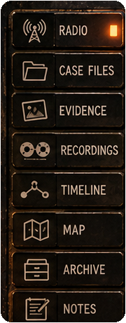
navigation_panel180 × 461 · hardware
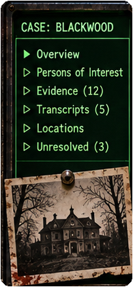
site_monitor_frame195 × 418 · hardware
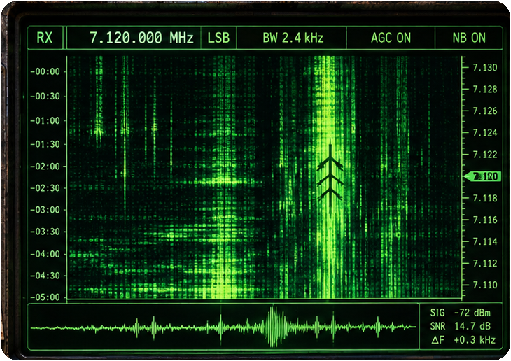
main_waterfall_bezel730 × 516 · hardware
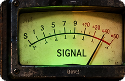
signal_meter246 × 159 · sprites
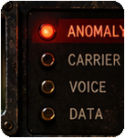
indicator_bank137 × 152 · hardware
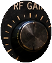
rf_gain88 × 105 · sprites
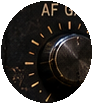
af_gain93 × 104 · sprites
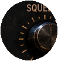
squelch99 × 105 · sprites
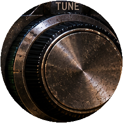
tuning_dial254 × 254 · sprites
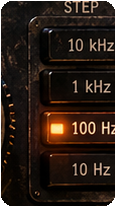
tuning_step_bank116 × 207 · sprites
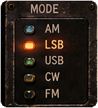
mode_bank142 × 156 · sprites
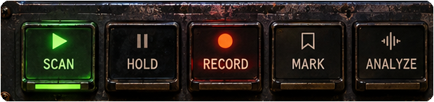
transport_deck619 × 146 · sprites
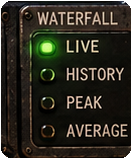
waterfall_mode_bank132 × 159 · sprites
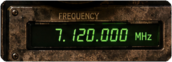
frequency_panel344 × 124 · sprites
button_scan103 × 106 · sprites
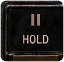
button_hold108 × 105 · sprites
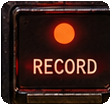
button_record111 × 105 · sprites
button_mark112 × 108 · sprites
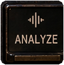
button_analyze108 × 110 · sprites
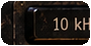
step_10khz91 × 46 · sprites
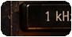
step_1khz91 × 47 · sprites
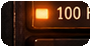
step_100hz91 × 47 · sprites
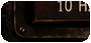
step_10hz91 × 43 · sprites
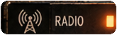
nav_radio165 × 49 · sprites
nav_case_files165 × 53 · sprites
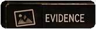
nav_evidence165 × 51 · sprites
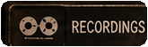
nav_recordings165 × 53 · sprites
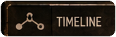
nav_timeline165 × 53 · sprites
nav_map165 × 50 · sprites
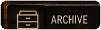
nav_archive165 × 50 · sprites
nav_notes165 × 50 · sprites
waterfall_blank612 × 352 · display
waterfall_status_blank670 × 38 · display
signal_waveform_blank555 × 61 · display
site_monitor_blank171 × 189 · display
frequency_readout_blank261 × 53 · display